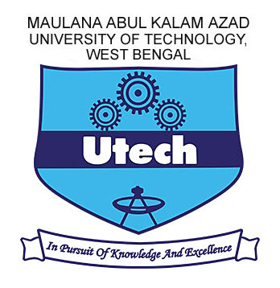

PhD in Electrical Engineering
Indian Institute of Science
Bangalore, India
June 2024 - Present
Hi there, thank you for visiting my site.
I am Akash Mondal, currently a PhD student in the
Department of Electrical Engineering at
Indian Institute of Science, under the supervision of
Prof. Kunal Narayan Chaudhury.
My primary research area is convex optimization, and I also work on smooth nonconvex optimization problems arising in deep learning.
I am broadly interested in areas of engineering that are deeply mathematical, including
linear Algebra,
Mathematical Optimization,
Applied Probability theory, and
Mathematical Analysis.
Prior to this, I completed my Master's from
Indian Institute of Science in AI.
Before that, I did my Bachelor's in Computer Science and Engineering from
Maulana Abul Kalam Azad University of Technology, West Bengal.
Indian Institute of Science
Bangalore, India
Indian Institute of Science
Bangalore, India

Maulana Abul Kalam Azad University of Technology, West Bengal
West Bengal, India